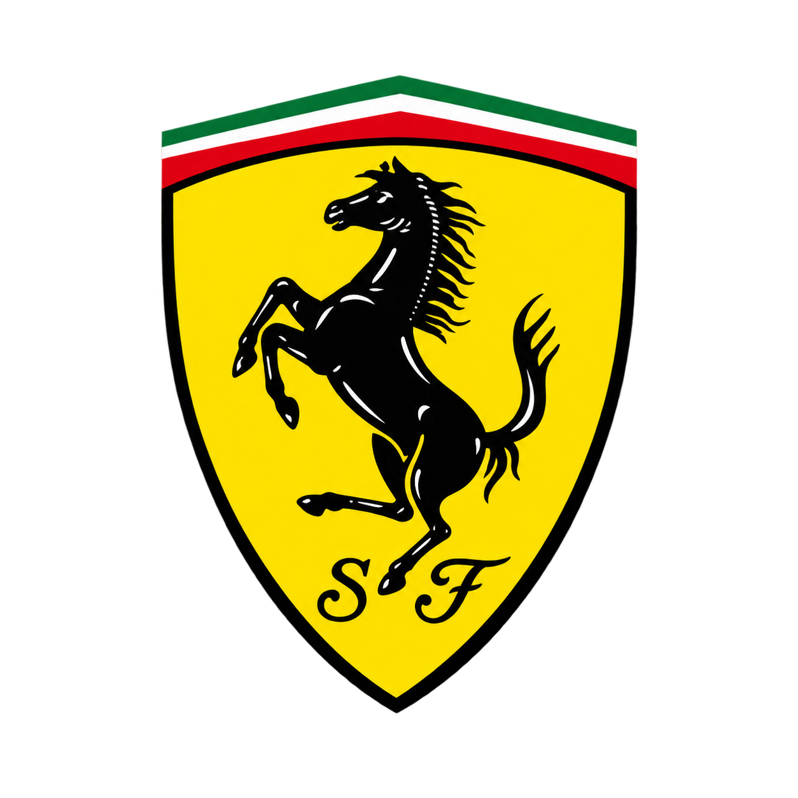

Aprenda criando
Quais são os 12 carros mais caros da Ferrari?
Muito além da engenharia de ponta, o universo das Ferraris ultrararas é movido por recordes históricos de leilões, edições limitadas
a pouquíssimas unidades no mundo e tecnologias revolucionárias que nasceram nas pistas de Fórmula 1 e redefiniram o mercado de luxo.

Por que são especiais?
Onde a tradição encontra a alta performance
DNA da Fórmula 1
Os modelos mais lendários da Ferrari nasceram nas pistas de corrida. Seu valor vem de motores icônicos e inovações do motorsport.
Raridade Absoluta
Muitas dessas Ferraris tiveram produções estritamente limitadas ou são projetos sob medida da divisão Special Projects.
Arte de Investimento
Carros que transcendem o mercado automotivo, atingindo dezenas de milhões de dólares em leilões ao redor do mundo.
Banco de dados dos carros